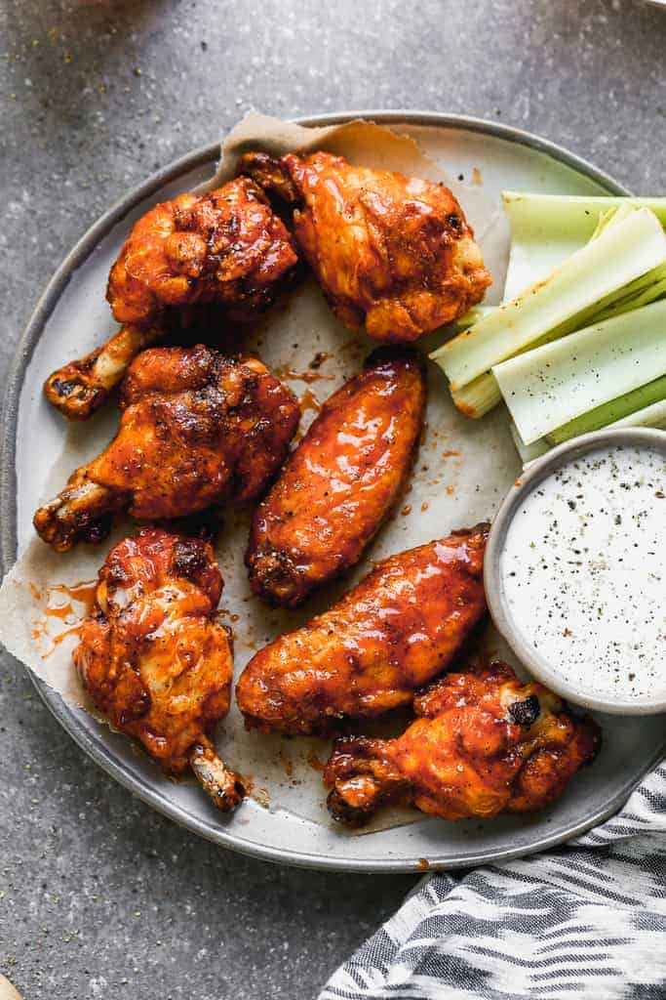

Chicken Wings

It’s football season and what appetizer is better with game-day then crispy baked chicken wings?!
Seriously, these little guys are the bomb.com!
They’re baked to crispy perfection, and then tossed in the most delicious sweet and spicy buffalo sauce.
They‚Äôre totally addicting and perfect for game day! Make them ASAP, and then thank me later! üôÇ
Ingredients
- 1.81 kg chicken wings, halved at joints, wingtips discarded
- 2 Tablespoons baking powder, aluminum free
- 3/4 teaspoon salt
- 0.5 teaspoon cracker black pepper
- 1 teaspoon paprika
- 1 teaspoon garlic powder
Steps
- Dry the wings well with paper towels.
- Toss with dry spice rub.
- Combine the salt, pepper, garlic powder, paprika, and baking powder in a small bowl.
- Then sprinkle the seasoning over the wings, tossing to evenly coat
- Bake. Arrange wings, skin side up and bake, turning every 20 minutes until wings are crispy and browned.
- Toss in sauce. Remove from oven allow to rest for 5 minutes before tossing in desired sauce.
Source: CLICK HERE
GO BACK ←